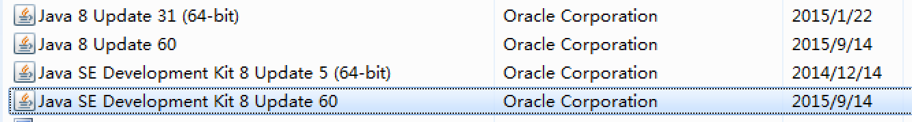
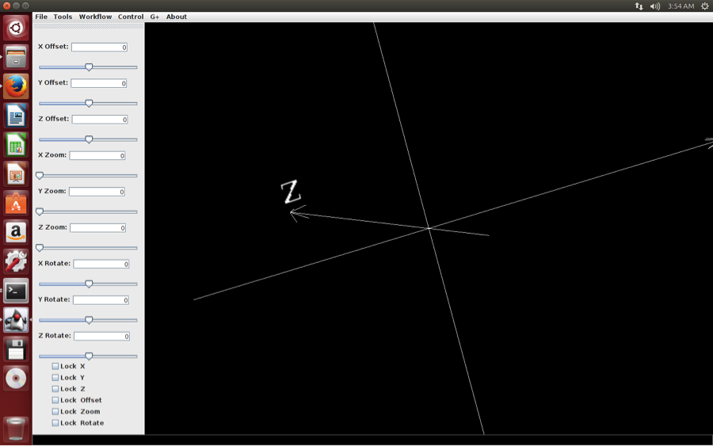

Install NicheA on *nix
NicheA can run on most of the unix-like OS, such as Ubuntu, CentOS, Debian. In this section, we introduce how to install NicheA on Ubuntu step by step. You can refer this page to install NicheA on other unix-like OS. Following this page, you also can install NicheA on Mac OS X. But we suggest you follow another section, only if you want to develop NicheA on Mac OS X.
1. Check the system information:
Linux ubuntu 3.13.0-32-generic #57-Ubuntu SMP Tue Jul 15 03:51:08 UTC 2014 x86_64 x86_64 x86_64 GNU/Linux
2. Install Java Runtime Environments (JRE), Java Development Kit (JDK), Ant and check Java version
The program 'java' can be found in the following packages:
* default-jre
* gcj-4.8-jre-headless
* openjdk-7-jre-headless
* gcj-4.6-jre-headless
* openjdk-6-jre-headless
Try: sudo apt-get install
If you read this message, you need to install Java Runtime Environments, version is not lower than 1.6.
Installing default JRE/JDK
This is the recommended and easiest option. This will install OpenJDK 6 on Ubuntu 12.04 and earlier and on 12.10+ it will install OpenJDK 7.
Installing Java with apt-get is easy. First, update the package index:
Then, check if Java is not already installed:
If it returns "The program java can be found in the following packages", Java hasn't been installed yet, so execute the following command:
> sudo apt-get install ant
This message means Java has been installed on your Ubuntu successfully.
java version "1.7.0_55"
OpenJDK Runtime Environment (IcedTea 2.4.7) (7u55-2.4.7-1ubuntu1)
OpenJDK 64-Bit Server VM (build 24.51-b03, mixed mode)
3. Install Java 3D
3.1 Check Java 3D
Download test file via this link.
Try to run test3d.jar in terminal.
When you get the following message, you need to install Java 3D.
at java.lang.Class.getDeclaredMethods0(Native Method)
......
When you see a form with 3D “Niche Analyst” in Fig.1 , congratulations! You make Java 3D run on your computer.
3.2 Install Java 3D
Download Java 3D via this link.
Go to the JRE folder, and execute the following command.
Note:
For a common installation, JRE is located at /usr/lib/jvm/default-java/jre.
> sudo sh /path-to-download-files/java3d-1_5_1-linux-amd64.bin
Then, go back to 3.1 to check the Java 3D.
4. Install ImageMagick Command line tools.
If you have installed ImageMagick on your computer, you will get the following message when you run "convert -version".
Version: ImageMagick 6.7.7-10 2014-03-06 Q16 http://www.imagemagick.org
Copyright: Copyright (C) 1999-2012 ImageMagick Studio LLC
Features: OpenMP
If you don't get the message above, you need to install ImageMagick with the following command.
5. Install GDAL
# Install subversion
# Install g++
# Install Hierarchical Data Format library
Note:
This library is not necessarily needed, but was required in order for this to compile against a clean Ubuntu 12.04 LTS system. I didn't need it on a clean EC2 Ubuntu 12.10 instance, so I'm commenting it out here. Uncomment if you run into dependency troubles.
# Download gdal 1.11.1
# Unzip gdal to a folder and run the following command.
# Configure and make
>cd gdal
>./configure
>make
>sudo make install
# Modify .bashrc to export environment variable necessary for gdal to find library files.
>echo " " >> $HOME/.bashrc
>echo "# GDAL environment variables" >> $HOME/.bashrc
>echo "export LD_LIBRARY_PATH=/usr/local/lib:$LD_LIBRARY_PATH" >> $HOME/.bashrc
>source $HOME/.bashrc
# REBOOT your computer to make sure the environment variable can be envoked on NicheA.
# Check the GDAL version with the following code
> gdalinfo –version
GDAL 2.0.0dev, released 2014/04/16
#Install swig
> sudo apt-get install swig
#Compile GDAL Java library
# Configure and make
>./configure
>make
>sudo make install
# Modify .bashrc to export environment variable necessary for gdal to find library files.
>echo "# GDAL environment variables" >> $HOME/.bashrc
>echo "export LD_LIBRARY_PATH=/usr/local/lib:$LD_LIBRARY_PATH" >> $HOME/.bashrc
>source $HOME/.bashrc
# REBOOT your computer to make sure the environment variable can be envoked on NicheA.
# Check the GDAL version with the following code
GDAL 2.0.0dev, released 2014/04/16
#Install swig
#Compile GDAL Java library
go to gdal/swig/java folder, and edit java.opt. Add “/usr/lib/jvm/default-java” to JAVA_HOME. If there is no folder “/usr/lib/jvm/default-java/include”, or "jni.h in” is not in “/usr/lib/jvm/default-java/include”, please reinstall JDK with
Edit java.opt, add JAVA_HOME = /usr/lib/jvm/default-java, save and close it.
6. Install R runtime environments
# Download and install R
By default, Ubuntu will install R v3.0 when you execute 'sudo apt-get install r-base', which can't install 'ggplot2' package in it. So we suggest to follow this page to install the newest R on your computer.
# Install R packages
> install.packages("ggplot2")
> install.packages("raster")
> install.packages("rgdal")
7. Run NicheA
# Download NicheA 3.0 for Linux .
# Run NicheA
The first time to launch NicheA, it will detect all the runtime environments to make sure that all the functions are available. If you see the following dialog form, please tell NicheA the path to the necessary files.

To find the localities of gdal_translate, gdalwarp, Rscript and convert, you can use ‘which’ command. For example
/usr/local/bin/gdal_translate
# Re-run NicheA
# When you see the following form, you run NicheA on Ubuntu successfully! Congratulations!
